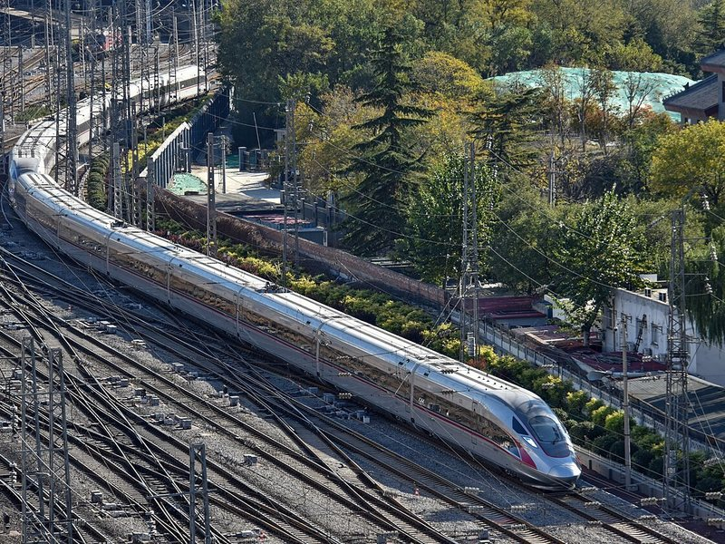

两条路
Two ways in
 Option A · the default
Option A · the defaultThe whole fortnight, then fly
- Do all of Beijing, Xi'an, Nanjing, Suzhou and Shanghai with the family
- Day 16: fly Shanghai → Chengdu (about 3 hours) as everyone else flies home
- Days 16–22 in Sichuan, as laid out below; fly home from Chengdu
- Three weeks away in total

Option B · Warren's train ideaPeel off at Xi'an by bullet train
- Day 10: while the family heads east, take the train southwest through the Qinling Mountains (3–4 hours, about $40)
- Same six-night Chengdu week, home around Day 16 with everyone else: no extra week off
- Or stay on a few days for the Mount Emei overnight and a spare day
- Skips Nanjing, Suzhou and Shanghai